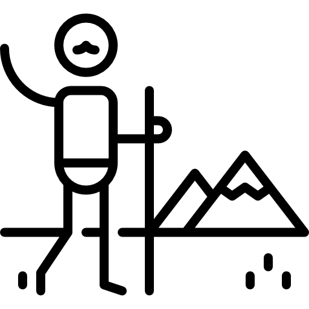

| GALÁPAGOS | ACTIVIDADES | ITINERARIOS | BIG 15 | |||||||||||||||||||||||||||||||
| Islas | Sitios de visita |  | Santa Cruz II | La Pinta | Isabela II | |||||||||||||||||||||||||||||
| 17 | 44 | 23 | 26 | 18 | 22 | 12 | 10 | 18 | 31 | Norte 5D (12 B15) |
Este 7D (13 B15) Santa Cruz II - Este7 Days - 13 Big15 
|
Oeste 5D (12 B15) |
Norte 5D (11 B15) |
Oeste 7D (12 B15) |
Este 5D (11 B15) |
Oeste 5D (12 B15) Isabela II - Oeste5 Days - 12 Big15 
|
Norte 5D (13 B15) Isabela II - Norte5 Days - 13 Big15 
|
Sureste 7D (14 B15) Isabela II - Sureste7 Days - 14 Big15 
|
18 | 38 | 28 | 45 | 4 | 40 | 20 | 6 | 7 | 10 | 3 | 8 | 1 | 6 | 1 | B15 Sitios para visitar |
| NA | Sn | BV | Pan | Ka | PB | Ply | Cn | Lu1 | Vie1 | Jue2 | Lu1 | Vie1 | Jue2 | Jue1 | Lu2 | Vie2 | Ga | Lm | Pqa | Fr | To | Im | Pn | Fla | Lp | Ü | Pqr | It | Alb | Co | SI | |||
| Baltra | Aeropuerto | 1Lu-11Vie | 1Vie-18Jue | 1Jue-14Lu | 1Lu-10Vie | 1Vie-17Jue | 1Jue-12Lu | 1Jue-11Lu | 1Lu-Vie10 | 1Vie-20Jue | 3 | |||||||||||||||||||||||
| Bartolomé | Playa Bartolomé | 6-D3Mie | 5-D3Mie | 4-D2Vie | 6 | |||||||||||||||||||||||||||||
| Bartolomé sendero a la cumbre | 7-D3Mie | 6-D3Mie | 5-D2Vie | 3 | ||||||||||||||||||||||||||||||
| Española | Bahía Gardner | 14-D5Mar | 10-D4Dom | 7-D3Dom | 5 | |||||||||||||||||||||||||||||
| Islote Osborn | P I | 11-D4Dom | 8-D3Dom | 5 | ||||||||||||||||||||||||||||||
| Punta Suarez | 13-D5Mar | 9-D4Dom | 10-D3Dom | 7 | ||||||||||||||||||||||||||||||
| Islote Gardner | 15-D5Mar | 12-D4Su | 9-D3Su | 4 | ||||||||||||||||||||||||||||||
| Fernandina | Punta Espinoza | 4-D2Vie | 4-D2Sa | 10-D4Dom | 6 | |||||||||||||||||||||||||||||
| Punta Mangle | I | I | I | 17-D5Mar | 7 | |||||||||||||||||||||||||||||
| Floreana | Mirador de la Baronesa | 11-D4Dom | 14-D6Mie | 15-D4Lu | 4 | |||||||||||||||||||||||||||||
| Bahía del Correo | 9-D4Dom | 12-D6Mie | 13-D4Lu | 3 | ||||||||||||||||||||||||||||||
| Punta Cormorant | 18-D4Dom | 16-D6Mie | 12-D4Lu | 5 | ||||||||||||||||||||||||||||||
| Islote Champion | 12-D4Dom | 15-D6Mie | 11-D4Lu | 2 | ||||||||||||||||||||||||||||||
| Loberia | 10-D4Dom | 13-D6Mie | 14-D4Lu | 2 | ||||||||||||||||||||||||||||||
| Genovesa | Bahía Darwin | 9-D4Jue | 8-D4Jue | 6-D3Mie | 5 | |||||||||||||||||||||||||||||
| El Barranco | 8-D4Jue | 9-D4Jue | 7-D3Mie | 7 | ||||||||||||||||||||||||||||||
| Isabela | Bahía Urbina | P | P | P | 5-D3Dom | 7 | ||||||||||||||||||||||||||||
| Caleta Tagus | P | P | P | P | P | P | P | 6-D3Dom | 8 | |||||||||||||||||||||||||
| Punta Vicente Roca | 3-D2Vie | 3-D2Sa | 9-D4Dom | 9 | ||||||||||||||||||||||||||||||
| Punta Moreno | I | I | I | I | 16-D5Mar | 9 | ||||||||||||||||||||||||||||
| Mosquera | Islote Mosquera | S | S | S | S | S | 2-D1Vie | 4 | ||||||||||||||||||||||||||
| Plaza Sur | Plaza Sur | 8-D3Dom | 2-D1Jue | 9-D4Jue | 6 | |||||||||||||||||||||||||||||
| Rabida | Playa Roja | S P | S P | S P | S P | S P | S P | S P | S P | 5-D3Mie | 7-D4Lu | 8 | ||||||||||||||||||||||
| San Cristobal | Aeropuerto | 3 | ||||||||||||||||||||||||||||||||
| Cerro Brujo | P | P | P | P | P | 8-D3Sa | 5 | |||||||||||||||||||||||||||
| Punta Pitt | S I | 4-D2Sa | 6-D3Sa | 3-D2Sa | 7 | |||||||||||||||||||||||||||||
| Centro de cría de tortugas | 5-D2Sa | 4-D2Vie | 5-D2Sa | 2 | ||||||||||||||||||||||||||||||
| Islote Pitt | 3-D2Sa | 7-D3Sa | 4-D2Sa | 2 | ||||||||||||||||||||||||||||||
| Loberia | 10-D4Dom | 13-D6Mie | 14-D4Lu | 2 | ||||||||||||||||||||||||||||||
| Paseo por la ciudad | 6-D2Sa | 5-D2Vie | 6-D2Sa | 6 | ||||||||||||||||||||||||||||||
| Santa Cruz | ||||||||||||||||||||||||||||||||||
| Los Gemelos | 10-D4Lu | 5-D3Sa | 10-D5Mar | 1 | ||||||||||||||||||||||||||||||
| Playa Garrapatero | S | S | S | S | 11-D4Lu | 1 | ||||||||||||||||||||||||||||
| Tortuga Bay | S | S | S | S | 7-D3Sa | 2 | ||||||||||||||||||||||||||||
| ECHD | 9-D4Lu | 5-D3Sa | 9-D5Mar | 11-D5Lu | 2-D1Jue | 4 | ||||||||||||||||||||||||||||
| Cerro Dragón | 2-D1Jue | 8-D4Lu | 7-D3Sa | 7 | ||||||||||||||||||||||||||||||
| Playa Las Bachas | S I | S I | S I | S I | 2-D1Lu | 2-D1Vie | 5 | |||||||||||||||||||||||||||
| Reserva de tortugas gigantes | 10-D5Vie | 6-D3Sa | 2-D1Lu | 2-D1Lu | 2 | |||||||||||||||||||||||||||||
| Paseo por la ciudad | 12-D4Lu | 8-D3SA | 11-D5Mar | 3-D1Jue | 3-D1Lu | 3 | ||||||||||||||||||||||||||||
| Islote Eden | Islote Eden | 3-D2Mar | 18-D6Mie | 2 | ||||||||||||||||||||||||||||||
| Santa Fé | Santa Fé | 7-D3Su | 3-D2Vie | 8-D4Jue | 7 | |||||||||||||||||||||||||||||
| Santiago | Bahía Sullivan | P I | P I | P I | P I | P I | 7-D3Mie | 6-D2Vie | 5 | |||||||||||||||||||||||||
| Caleta Bucanero | S I | S I | S I | S I | S I | S I | 3-D2Mar | 8-D3Sa | 8 | |||||||||||||||||||||||||
| Puerto Egas | S I | S I | S I | 4-D2Mar | 4-D2Mar | 7 | ||||||||||||||||||||||||||||
| Seymour Norte | Seymour Norte | 17-D6Mie | 2-D1Vie | 19-D6Mie | 7 | |||||||||||||||||||||||||||||
| Sombrero Chino | Sombrero Chino | P I | P I | P I | P I | P I | P I | P I | P I | 4-D2Mar | 5-D2Mar | 5 | ||||||||||||||||||||||